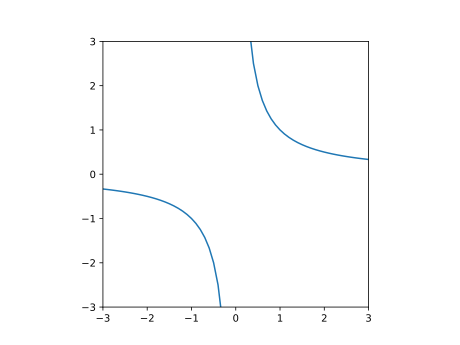
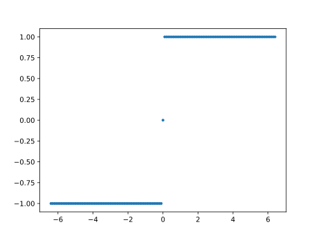
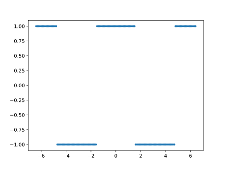
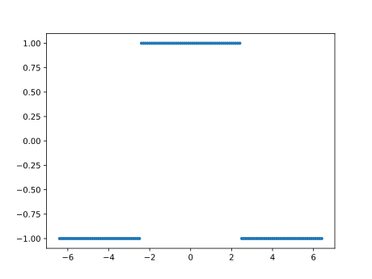
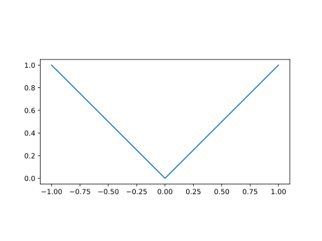

第4回：▶︎ 不連続な曲線を描く
▶︎ 不連続
▶︎ 逆数関数を描く
using PyPlot
xs=-3:0.1:3
plot(xs,1./xs)
xlim(-3,3)
ylim(-3,3)
plt[:axes]()[:set_aspect]("equal")
▶︎ 不連続な有理式を描く
\[y = \dfrac{x^3+8}{x^3+3x^2-4x-12}\]
using PyPlot
xs=-10:0.1:10
plot(xs, xs.^3+3xs.^2-4*xs-12)
ylim(-20,20)
xlim(-4,4)
axhline(0, color="k", lw=0.5)
axvline(-3, color="k", lw=0.5)
axvline(-2, color="k", lw=0.5)
axvline(2, color="k", lw=0.5)
xs=-20:0.05:20
plot(xs, (xs.^3+8)./(xs.^3+3xs.^2-4xs-12))
ylim(-10,10)
axhline(0, color="k", lw=0.5)
axvline(-3, color="k", lw=0.5)
axvline(2, color="k", lw=0.5)
xs=-30:0.05:30
plot(xs, (xs.^3+8)./(xs.^3+3xs.^2-4xs-12))
ylim(-10,10)
xlim(-3,3)
axhline(0, color="k", lw=0.5)
axvline(-3, color="k", lw=0.5)
axvline(-2, color="k", lw=0.5)
axvline(2, color="k", lw=0.5)
▶︎ 正接関数・余接関数を描く
正接 $y = \tan{x}$
余接 $y = \cot{x}$
ラジアン単位 tan, cot
using PyPlot
xs=-2pi:pi/360:2pi
plot(xs, tan.(xs), label="tan")
plot(xs, cot.(xs), label="cot")
ylim(-1e1, 1e1)
xlabel("radian")
legend()
角度単位 tand, cotd
using PyPlot
xs=-360:1:360
plot(xs, tand.(xs), label="tand")
plot(xs, cotd.(xs), label="cotd")
xlabel("degree")
ylim(-1e1, 1e1)
legend()
▶︎ 符号関数を描く
using PyPlot
using PyPlot
xs=-6.4:0.1:6.4
-6.4:0.1:6.4
plot(xs, sign.(xs), ".")
plot(xs, sign.( cos.(xs)), ".")
plot(xs, sign.( cos.(xs*2/pi)), ".")
▶︎ 絶対値関数
using PyPlot
xs=-1:0.1:1
plot(xs,abs.(xs))
plt[:axes]()[:set_aspect]("equal")